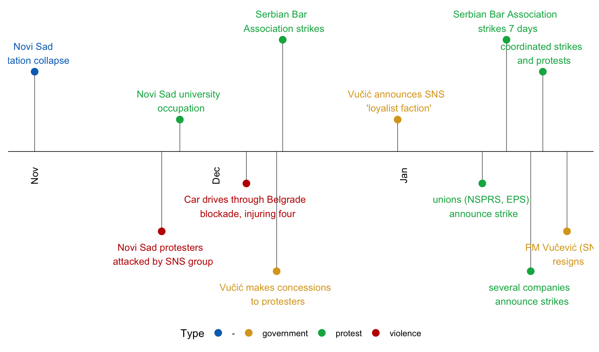
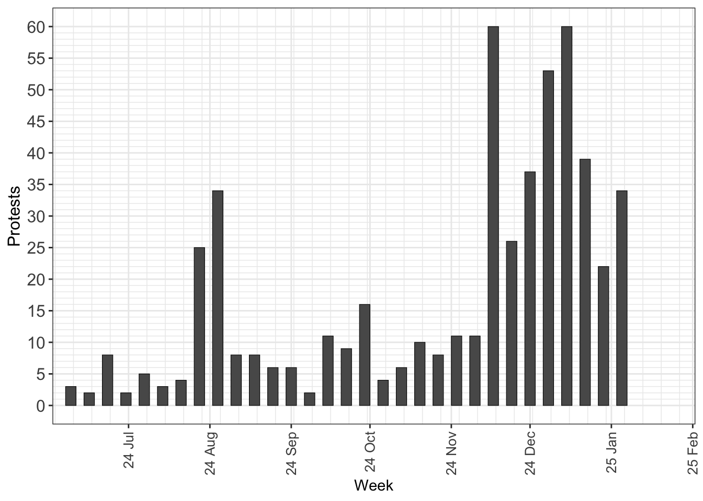
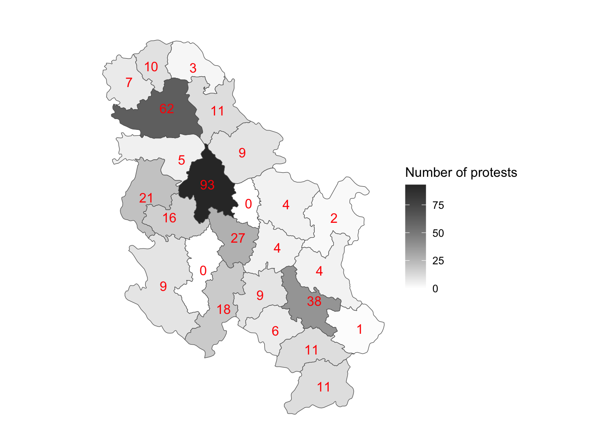
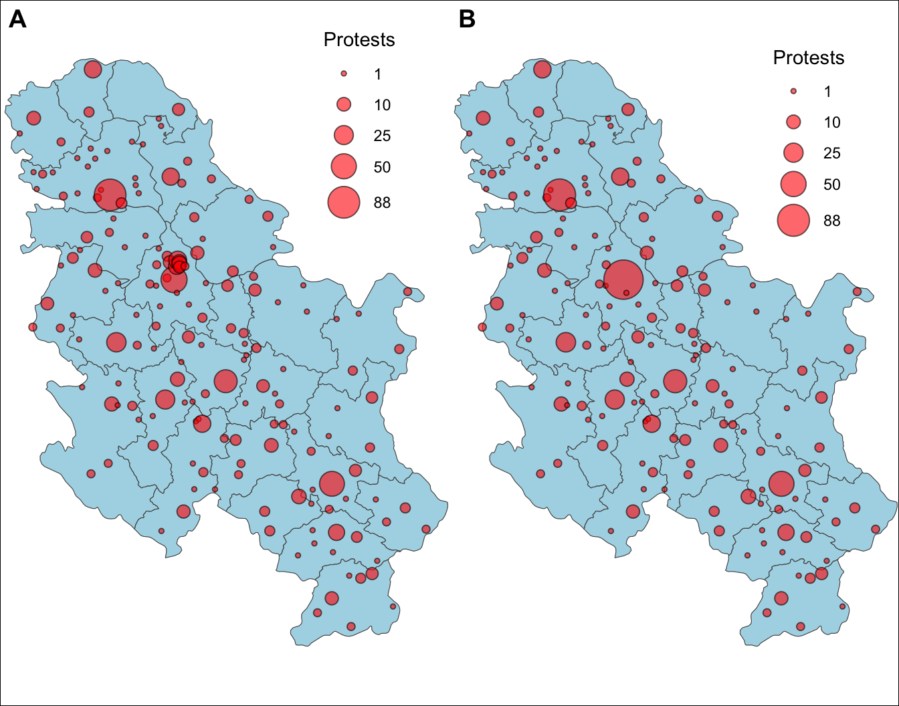
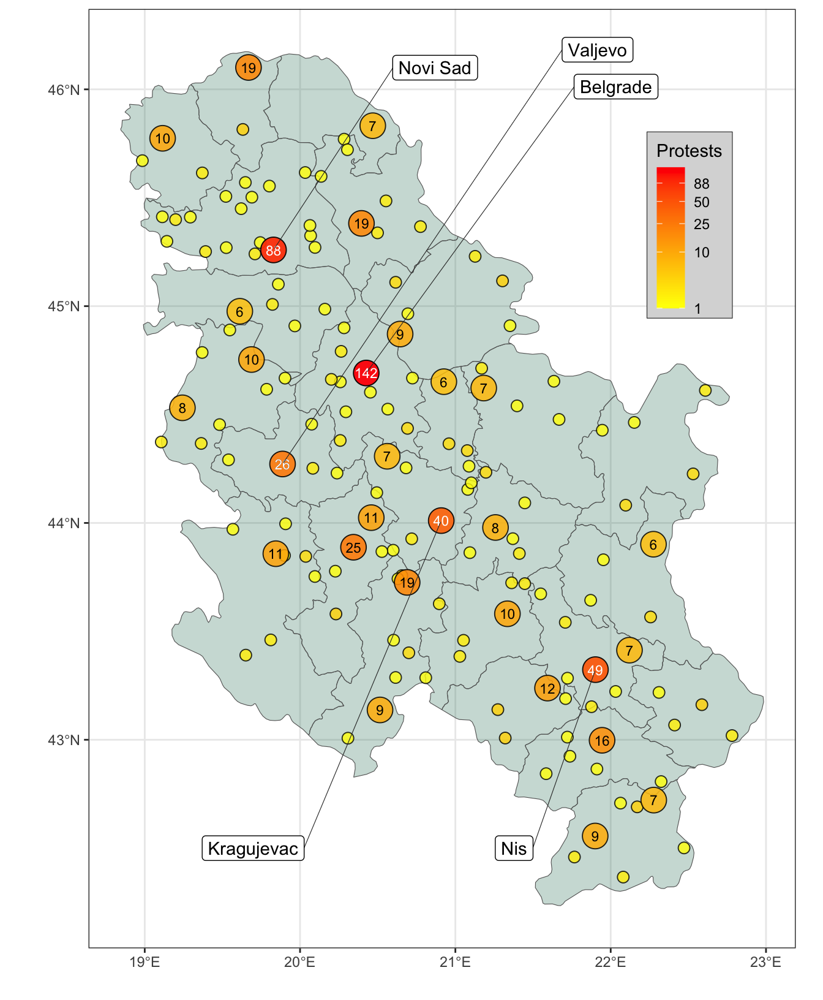

Concerns about corruption in the government and public institutions of Serbia have been prevalent for many years. But the collapse of the concrete roof at Novi Sad rail station on 1 November 2024 quickly took on a symbolic dimension, epitomising the hazardous consequences of graft in the public sector. This symbol became the catalyst for a wave of protests. Since the Serbian Progressive Party (Srpska napredna stranka, SNS) has led the Serbian government since 2012 (under President Aleksandar Vučić since 2017), protests inevitably focused on Vučić and the SNS, decrying their culpability for such public infrastructure failures.
The protest wave has included vigils, demonstrations, blockades, and strikes. It has triggered violent clashes (some linked to state actors), governmental reactions and concessions. (Some of these developments are represented in Figure 1 — but the unfolding of events is more complex.)

Figure 1: Timeline of events related to the protests.
As shown in Figure 2, the number of protests since November 2024 dwarfs preceding rates of protest. As of 1 February 2025, the protests have shown no signs of dissipating, with thousands of protesters continuing to demand justice and accountability for the deaths of 15 people in Novi Sad.

Figure 2: Number of protests by week.
The 2024-2025 anti-corruption protests in Serbia have been characterized by widespread demonstrations and traffic blockades across the country. Data from ACLED (the Armed Conflict Location and Event Data Project) allows us to inspect this protest wave in greater detail. The spatial patterns of these protests have been marked by a strong presence in urban areas, with protesters often gathering in front of government buildings, universities, and other public institutions. The cities of Belgrade and Novi Sad (where the rail station roof collapse occurred) have seen the most frequent protest activity. Figure 3 and Figure 4 show that (unsurprisingly) the capital of Belgrade has seen the highest concentration of protest activity; thousands of protesters have gathered in front of the Serbian state TV building and other government institutions to demand unbiased reporting and accountability from the government. Novi Sad, the city where the railway station roof collapse occurred, has also seen significant protests, with demonstrators holding daily 15-minute traffic blockades to honour the 15 people who died in the tragedy.

Figure 3: Map of protests by region.

Figure 4: Plot of protests. Plot A shows all protests by location. In Plot B, protests in different areas of Belgrade are grouped together.
As shown in Figure 5, other cities across Serbia, including Niš, Čačak, and Kraljevo, have also experienced protests, with educators, students, and citizens demanding better working conditions, increased funding for education, and an end to government corruption. The protests have also taken on a symbolic dimension, with protesters leaving red hand-prints on government buildings and using slogans like “corruption kills” to emphasise their demands for transparency and accountability.

Figure 5: Plot of protests, similar to the map in Hellmeier (2022).
Further protests may bring further concessions and resignations from the Serbian government. In the meantime, the interactive map in Figure 6 plots the protests that have occurred since 1 November 2024 through mid-January 2025.
---title: Serbia anti-corruption protestsdate: 2025-02-01description: "Data on Serbia anti-corruption protests."image: srb_protests.pngtwitter-card: image: "srb_protests.png"open-graph: image: "srb_protests.png"categories: - social movements - counter-mobilisation---Concerns about corruption in the government and public institutions of Serbia have been prevalent for many years. But the collapse of the concrete roof at Novi Sad rail station on 1 November 2024 quickly took on a symbolic dimension, epitomising the hazardous consequences of graft in the public sector. This symbol became the catalyst for a wave of [protests](https://apnews.com/article/serbia-roof-collapse-china-protests-3cfa282938b1ddec12c4795b9ecb3e95). Since the Serbian Progressive Party (*Srpska napredna stranka*, SNS) has led the Serbian government since 2012 (under President Aleksandar Vučić since 2017), protests inevitably focused on Vučić and the SNS, decrying their culpability for such public infrastructure failures.```{r data-setup, echo=FALSE, message=FALSE, warning=FALSE}library(tidyverse)library(tidygeocoder)library(ggplot2)library(sf)library(rnaturalearth)library(mapview)library(dplyr)library(spatstat)library(leafpop)library(readxl)SRB <- read_csv("2024-06-01-2025-01-17-Europe-Serbia.csv")## WRANGLE DATESRB$date <- as.Date(SRB$event_date, "%d %B %Y")## FIX PLACES# fullANPI_long$Place=ifelse(fullANPI_long$Place=="Emilia - Romagna",# "Emilia-Romagna", fullANPI_long$Place)```The protest wave has included vigils, demonstrations, blockades, and strikes. It has triggered violent clashes (some linked to state actors), governmental reactions and concessions. (Some of these developments are represented in @fig-timeline --- but the unfolding of events is more complex.)```{r timeline, echo=FALSE, message=FALSE, warning=FALSE, fig.cap="Timeline of events related to the protests.", fig.width=8.5}#| label: fig-timeline## https://www.themillerlab.io/posts/timelines_in_r/library(lubridate)library(ggplot2)library(scales)library(tidyverse)library(knitr)# library(timevis)a1 <- c("2024-11-01","-","Novi Sad \n station collapse")a2 <- c("2024-11-22","violence","Novi Sad protesters \n attacked by SNS group")a3 <- c("2024-11-25","protest","Novi Sad university \n occupation")a4 <- c("2024-12-06","violence", "Car drives through Belgrade \n blockade, injuring four")a5 <- c("2024-12-12", "protest", "Serbian Bar \n Association strikes")a6 <- c("2024-12-11", "government", "Vučić makes concessions \n to protesters")a7 <- c("2024-12-31", "government", "Vučić announces SNS \n 'loyalist faction'")a8 <- c("2025-01-14", "protest", "unions (NSPRS, EPS) \n announce strike")a9 <- c("2025-01-18", "protest", "Serbian Bar Association \n strikes 7 days")a10<- c("2025-01-22", "protest", "several companies \n announce strikes")a11<- c("2025-01-24", "protest", "coordinated strikes \n and protests")a12<- c("2025-01-28", "government", "PM Vučević (SNS) \n resigns")SRB_timeline<-as.data.frame(rbind(a1,a2,a3,a4,a5,a6,a7,a8,a9,a10,a11,a12))colnames(SRB_timeline) <- c("Date","Type","Event")# rownames(papers) <- papers$Works# papers <- dplyr::select(papers, -Works)SRB_timeline$Date <- as.Date(SRB_timeline$Date)event_type_levels <- c("-", "government", "protest", "violence")event_type_colors <- c("#0070C0", "goldenrod", "#00B050", "#C00000") SRB_timelineX <- SRB_timeline$Event# Make the Event_type vector a factor using the levelsSRB_timeline$Event <- factor(SRB_timeline$Event, levels=event_type_levels, ordered=TRUE)SRB_timeline$Event <- SRB_timelineX## vary the height or direction on the timeline milestones to avoid overlapping or overcrowded text descriptions.## Set the heights for milestones.positions <- c(0.5, -0.5, 0.2, -0.2, 0.7, -0.75, 0.2, -0.2, 0.7, -0.75) #, 1.0, -1.0)# , 0.25, -0.25, 0.75, -0.75) # Set the directions for milestones, for example above and below.directions <- c(1, -1) # Assign the positions & directions to each date from those set above.line_pos <- data.frame( "Date"=unique(SRB_timeline$Date), "position"=rep(positions, length.out=length(unique(SRB_timeline$Date))), "direction"=rep(directions, length.out=length(unique(SRB_timeline$Date))))# Create columns with the specified positions and directions for each milestone eventSRB_timeline <- merge(x=SRB_timeline, y=line_pos, by="Date", all = TRUE) # Create a one month "buffer" at the start and end of the timelinemonth_buffer <- 1 month_date_range <- seq(min(SRB_timeline$Date) - (months(month_buffer)-months(month_buffer)), max(SRB_timeline$Date) + (months(month_buffer)-months(month_buffer)), by='month')## 3 letter abbreviations of each month.month_format <- format(month_date_range, '%b') month_df <- data.frame(month_date_range, month_format)year_date_range <- seq(min(SRB_timeline$Date) - months(month_buffer), max(SRB_timeline$Date) + months(month_buffer), by='year')# only show the years for a december to january transition.year_date_range <- as.Date( intersect( ceiling_date(year_date_range, unit="year"), floor_date(year_date_range, unit="year")), origin = "2024-11-01") # We want the format to be in the four digit format for years.year_format <- format(year_date_range, '%Y') year_df <- data.frame(year_date_range, year_format)# Lets offset the labels 0.2 away from scatter pointstext_offset <- 0.13 # Let's use the absolute value since we want to add the text_offset and increase space away from the scatter points absolute_value<-(abs(SRB_timeline$position)) text_position<- absolute_value + text_offset# Let's keep the direction above or below for the labels to match the scatter pointsSRB_timeline$text_position<- text_position * SRB_timeline$direction # Create timeline coordinates with an x and y axistimeline_plot<-ggplot(SRB_timeline, aes(x=Date,y=position,col=Type,label=SRB_timeline$Event))+ # Add the label Milestones labs(col="Type")+ # Assigning the colors and order to the milestones scale_color_manual(values=event_type_colors, labels=event_type_levels, drop=F)+ # Using the classic theme to remove background gray theme_classic()+ # Plot a horizontal line at y=0 for the timeline geom_hline(yintercept=0, color="black", size=0.3)+ # plot the vertical lines for milestones geom_segment(data=SRB_timeline, aes(y=SRB_timeline$position,yend=0,xend=SRB_timeline$Date), color='black', size=0.2)+ # plot the scatter points at the tips of the vertical lines and date geom_point(aes(y=SRB_timeline$position), size=3)+ # remove axis since this is a horizontal timeline; postion legend to bottom theme(axis.line.y=element_blank(), axis.text.y=element_blank(), axis.title.x=element_blank(), axis.title.y=element_blank(), axis.ticks.y=element_blank(), axis.text.x =element_blank(), axis.ticks.x =element_blank(), axis.line.x =element_blank(), legend.position = "bottom")+ # add the text for each month geom_text(data=month_df, aes(x=month_date_range,y=-0.15,label=month_format), size=3.5,vjust=0.5, color='black', angle=90)+ # add the text for each year geom_text(data=year_df, aes(x=year_date_range,y=-0.25,label=year_format, fontface="bold"), size=3.5, color='black')+ # add text for points geom_text(aes(y=SRB_timeline$text_position,label=SRB_timeline$Event), size=3.5, vjust=0.6)timeline_plot```As shown in @fig-time-bar, the number of protests since November 2024 dwarfs preceding rates of protest. As of 1 February 2025, the protests have shown no signs of dissipating, with thousands of protesters continuing to demand justice and accountability for the deaths of 15 people in Novi Sad.```{r time-bar, message = FALSE, warning=FALSE, echo=FALSE, fig.cap="Number of protests by week."}#| label: fig-time-barlibrary(lubridate)demos_grouped <- SRB %>% group_by(date) %>% summarise(Protests = n())### GROUP BY WEEKdemos_grouped_week <- demos_grouped %>% group_by(week=floor_date(date, "1 week)")) %>% summarise(ProtestsNumber = sum(Protests))plot_demos_week <- ggplot(demos_grouped_week, aes(x=week, y=ProtestsNumber))+ geom_bar(colour="black", width=4, linewidth=0.2,stat = "identity") + theme_bw() + scale_x_date("Week",date_labels="%y %b",date_breaks="1 month",minor_breaks="1 week", limits = c(min(demos_grouped_week$week), max(demos_grouped_week$week)), expand=c(0,0))+ scale_y_continuous("Protests", breaks=seq(0,60,5), minor_breaks=seq(0,60,1), limits=c(0,60))+ theme(axis.text.x = element_text(angle = 90, vjust = 0.5, hjust=1, size=10), axis.text.y = element_text(size = 12), axis.title.y = element_text(size = 12), # legend.text=element_text(size=12), # legend.title=element_blank(), # legend.position = c(0.25, 0.8), # legend.background = element_rect(linetype = 1, linewidth = 0.5, colour = 1) ) # ggtitle("Target status")+ # theme(plot.title=element_text(hjust=1, # family='', # face='bold', # colour='black', # size=25, margin=margin(t=40,b=-30)))plot_demos_week### GROUP BY MONTHdemos_grouped_month <- demos_grouped %>% group_by(month=floor_date(date, "1 month)")) %>% summarise(ProtestsNumber = sum(Protests))## something's wrong hereplot_demos_month <- ggplot(demos_grouped_month, aes(x=month, y=ProtestsNumber))+ geom_bar(colour="black", width=4, linewidth=0.2,stat = "identity") + theme_bw() + scale_x_date("Month",date_labels="%y %b",date_breaks="1 month",minor_breaks="1 month", limits = c(min(demos_grouped_month$month), max(demos_grouped_month$month)), expand=c(0.3,0.3))+ scale_y_continuous("Protests", breaks=seq(0,200,10), minor_breaks=seq(0,200,5), limits=c(0,200))+ theme(axis.text.x = element_text(angle = 90, vjust = 0.5, hjust=1, size=10), axis.text.y = element_text(size = 12), axis.title.y = element_text(size = 12))# plot_demos_month``````{r fig.cap="Density map of protests.", message=FALSE, warning=FALSE}#| label: fig-map-density#| include: falseSRB <- as.data.frame(SRB)SRB$Latitude <- SRB$latitudeSRB$Longitude <- SRB$longitudeSRB$latitudeJIT <- jitter(SRB$latitude, factor = 100)SRB$longitudeJIT <- jitter(SRB$longitude, factor = 100)SRB <- subset(SRB, date > as.Date('2024-11-01'))SRB_sf <- SRB %>% st_as_sf( coords = c("longitude", "latitude"), crs = st_crs("EPSG:8682") # CRS for Serbia (https://epsg.io/?q=Serbia) )rs = ne_countries(scale=50, returnclass="sf") |> filter(admin=="Republic of Serbia")RS = ne_states(returnclass = "sf") |> filter(admin == "Republic of Serbia") # plot(st_geometry(RS), border = 'red')# plot(st_geometry(SRB_sf), add = TRUE, cex = .5)# RS <- dplyr::select(RS, name, geometry)# RS_prov <- RS %>% dplyr::select(province = name, region, geometry)st_crs(SRB_sf) <- st_crs(rs)SRB_sf_add <- SRB_sf %>% sf::st_intersection(RS)pp = st_geometry(SRB_sf_add)window = st_geometry(rs)crs = st_crs("EPSG:8682") # CRS for Serbiapp = st_transform(pp, crs)[!st_is_empty(pp)]window = st_transform(window, crs)wt = as.ppp(c(window, pp))# Smooth pointsdensity_spatstat <- density(wt, dimyx = 500)# Convert density_spatstat into a stars object.density_stars <- stars::st_as_stars(density_spatstat)# Convert density_stars into an sf objectdensity_sf <- st_as_sf(density_stars) %>% st_set_crs(8682)map_density <- ggplot() + geom_sf(data = density_sf, aes(fill = v), col = NA) + scale_fill_viridis_c(option = "magma") + # scale_fill_gradientn(colours = c("grey80", "grey10")) + # geom_sf(data = st_boundary(it_states)) + theme_void() + theme(legend.position="none")map_density```The 2024-2025 anti-corruption protests in Serbia have been characterized by widespread demonstrations and traffic blockades across the country. Data from [ACLED](https://acleddata.com/) (the **Armed Conflict Location and Event Data** Project) allows us to inspect this protest wave in greater detail. The spatial patterns of these protests have been marked by a strong presence in urban areas, with protesters often gathering in front of government buildings, universities, and other public institutions. The cities of Belgrade and Novi Sad (where the rail station roof collapse occurred) have seen the most frequent protest activity. @fig-map-regions and @fig-map-vanbaalen show that (unsurprisingly) the capital of Belgrade has seen the highest concentration of protest activity; thousands of protesters have gathered in front of the Serbian state TV building and other government institutions to demand unbiased reporting and accountability from the government. Novi Sad, the city where the railway station roof collapse occurred, has also seen significant protests, with demonstrators holding daily 15-minute traffic blockades to honour the 15 people who died in the tragedy. ```{r map-regions, echo=FALSE, message = FALSE, warning=FALSE, fig.cap="Map of protests by region."}#| label: fig-map-regionsSRB_loc <- SRB_sf_add %>% group_by(admin1) %>% summarise(Protests=n())SRB_loc$TOT <- sum(SRB_loc$Protests)SRB_loc$PROP <- SRB_loc$Protests / SRB_loc$TOTSRB_loc$PERCENT <- SRB_loc$PROP*100RS = ne_states(returnclass = "sf") |> filter(admin == "Republic of Serbia") # RS_prov <- RS %>% dplyr::select(province = name, region, geometry)SRB_loc$admin1 <- case_when( SRB_loc$admin1=="Belgrade" ~ "Belgrade", SRB_loc$admin1=="Bor" ~ "Bor", SRB_loc$admin1=="Branicevo" ~ "Braničevo", SRB_loc$admin1=="Central Banat" ~ "Central Banat", SRB_loc$admin1=="Jablanica" ~ "Jablanica", SRB_loc$admin1=="Kolubara" ~ "Kolubara", SRB_loc$admin1=="Macva" ~ "Mačva", SRB_loc$admin1=="Moravica" ~ "Moravica", # Moravica|Morava SRB_loc$admin1=="Nisava" ~ "Nišava", SRB_loc$admin1=="North Backa" ~ "North Bačka", SRB_loc$admin1=="North Banat" ~ "North Banat", SRB_loc$admin1=="Pcinja" ~ "Pčinja", SRB_loc$admin1=="Pirot" ~ "Pirot", SRB_loc$admin1=="Podunavlje" ~ "Podunavlje", # Podunavlje|Danube SRB_loc$admin1=="Pomoravlje" ~ "Pomoravlje", SRB_loc$admin1=="Rasina" ~ "Rasina", SRB_loc$admin1=="Raska" ~ "Raška", SRB_loc$admin1=="South Backa" ~ "South Bačka", SRB_loc$admin1=="South Banat" ~ "South Banat", SRB_loc$admin1=="Srem" ~ "Srem", SRB_loc$admin1=="Sumadija" ~ "Šumadija", SRB_loc$admin1=="Toplica" ~ "Toplica", SRB_loc$admin1=="West Backa" ~ "West Bačka", SRB_loc$admin1=="Zajecar" ~ "Zaječar", SRB_loc$admin1=="Zlatibor" ~ "Zlatibor",)SRB_loc <- as.data.frame(SRB_loc)mappedSRB_loc <- RS %>% left_join(SRB_loc, by = c("name_alt" = "admin1"))mappedSRB_loc[is.na(mappedSRB_loc)] <- 0SRB_protests_region <- ggplot(mappedSRB_loc) + geom_sf(aes(fill = Protests))+ geom_sf_text(aes(label=Protests), colour="red")+ # geom_sf_text(aes(label = scales::percent(PROP)))+ scale_fill_gradient("Number of protests", low = "white", high = "gray20")+ theme_void()+ # theme(legend.position = "none")+ labs(title="")+theme(plot.title = element_text(hjust = 0.5))SRB_protests_region``````{r map-vanbaalen, message = FALSE, warning=FALSE, echo=FALSE, fig.cap="Plot of protests. Plot A shows all protests by location. In Plot B, protests in different areas of Belgrade are grouped together.", fig.height=5.5}#| label: fig-map-vanbaalen# SRB_trim <- SRB %>% drop_na(longitude)SRB <- as.data.frame(SRB)SRB$Latitude <- SRB$latitudeSRB$Longitude <- SRB$longitudeSRB$latitudeJIT <- jitter(SRB$latitude, factor = 100)SRB$longitudeJIT <- jitter(SRB$longitude, factor = 100)SRB_sf <- SRB %>% st_as_sf( coords = c("longitude", "latitude"), crs = st_crs("EPSG:8682") # CRS for Serbia (https://epsg.io/?q=Serbia) )rs = ne_countries(scale=50, returnclass="sf") |> filter(admin=="Republic of Serbia")RS = ne_states(returnclass = "sf") |> filter(admin == "Republic of Serbia") # plot(st_geometry(RS), border = 'red')# plot(st_geometry(SRB_sf), add = TRUE, cex = .5)# RS <- dplyr::select(RS, name, geometry)# RS_prov <- RS %>% dplyr::select(province = name, region, geometry)st_crs(SRB_sf) <- st_crs(rs)SRB_sf_add <- SRB_sf %>% sf::st_intersection(RS)SRB_loc <- SRB_sf_add %>% group_by(location) %>% summarise(Protests=n())plot_VB_diff <- ggplot() + geom_sf(data = RS, fill = "lightblue")+ # "aquamarine" geom_sf(data = st_boundary(RS), linewidth=0.05, color=alpha("grey30", 0.7), fill="grey30", alpha=0.7)+ coord_sf(xlim = c(18.8, 23), ylim = c(42.2, 46.2), expand = FALSE)+ geom_count(data=SRB_sf, aes(x=Longitude, y=Latitude), fill="red", shape=21, alpha=0.6, color="black", stroke=0.5)+ scale_size(name = "Protests", breaks = c(1, 10, 25, 50, 88), range = c(1, 8))+ theme_void()+theme(legend.position=c(0.8, 0.88))# SRB_loc %>% subset(str_starts(location, "Belgrad")) %>% summarise(sum(Protests))SRB_belgrade_grouped <- SRB %>% mutate( location=ifelse(startsWith(location, "Belgrad"), "Belgrade", location))SRB_belgrade_grouped$latitude=ifelse( SRB_belgrade_grouped$location=="Belgrade", 44.6916, SRB_belgrade_grouped$latitude)SRB_belgrade_grouped$longitude=ifelse( SRB_belgrade_grouped$location=="Belgrade", 20.4261, SRB_belgrade_grouped$longitude)SRB_belgrade_grouped$Latitude <- SRB_belgrade_grouped$latitudeSRB_belgrade_grouped$Longitude <- SRB_belgrade_grouped$longitudeSRB_belgrade_grouped$latitudeJIT <- jitter(SRB_belgrade_grouped$latitude, factor = 100)SRB_belgrade_grouped$longitudeJIT <- jitter(SRB_belgrade_grouped$longitude, factor = 100)SRB_belgrade_grouped_sf <- SRB_belgrade_grouped %>% st_as_sf( coords = c("longitude", "latitude"), crs = st_crs("EPSG:8682") # CRS for Serbia (https://epsg.io/?q=Serbia) )plot_VB_group <- ggplot() + geom_sf(data = RS, fill = "lightblue")+ geom_sf(data = st_boundary(RS), linewidth=0.05, color=alpha("grey30", 0.7), fill="grey30", alpha=0.7)+ coord_sf(xlim = c(18.8, 23), ylim = c(42.2, 46.2), expand = FALSE)+ geom_count(data=SRB_belgrade_grouped_sf, aes(x=Longitude, y=Latitude), fill="red", shape=21, alpha=0.6, color="black", stroke=0.5)+ scale_size(name = "Protests", breaks = c(1, 10, 25, 50, 88), range = c(1, 10))+ theme_void()+theme(legend.position=c(0.8, 0.85))# theme(legend.position=c(0.9, 0.8), legend.margin=margin(6,6,6,6),# legend.background=element_rect(fill="grey85",linewidth=0.2, # linetype="solid", # colour="grey20"))+# guides(colour=guide_legend()) library(cowplot)SRBmaps <- plot_grid(plot_VB_diff, plot_VB_group, nrow = 1, align = "h", labels = c('A', 'B'))+ theme(plot.background=element_rect(color = "black"))SRBmaps```As shown in @fig-map-hellmeier, other cities across Serbia, including Niš, Čačak, and Kraljevo, have also experienced protests, with educators, students, and citizens demanding better working conditions, increased funding for education, and an end to government corruption. The protests have also taken on a symbolic dimension, with protesters leaving red hand-prints on government buildings and using slogans like "corruption kills" to emphasise their demands for transparency and accountability.```{r map-hellmeier, message = FALSE, warning=FALSE, echo=FALSE, fig.cap="Plot of protests, similar to the map in Hellmeier (2022).", fig.height=8.5}#| label: fig-map-hellmeierSRB_belgrade_grouped <- SRB %>% mutate( location=ifelse(startsWith(location, "Belgrad"), "Belgrade", location))SRB_belgrade_grouped$latitude=ifelse( SRB_belgrade_grouped$location=="Belgrade", 44.6916, SRB_belgrade_grouped$latitude)SRB_belgrade_grouped$longitude=ifelse( SRB_belgrade_grouped$location=="Belgrade", 20.4261, SRB_belgrade_grouped$longitude)SRB_belgrade_grouped$Latitude <- SRB_belgrade_grouped$latitudeSRB_belgrade_grouped$Longitude <- SRB_belgrade_grouped$longitudeSRB_belgrade_grouped$latitudeJIT <- jitter(SRB_belgrade_grouped$latitude, factor = 100)SRB_belgrade_grouped$longitudeJIT <- jitter(SRB_belgrade_grouped$longitude, factor = 100)SRB_belgrade_grouped_sf <- SRB_belgrade_grouped %>% st_as_sf( coords = c("longitude", "latitude"), crs = st_crs("EPSG:8682") # CRS for Serbia (https://epsg.io/?q=Serbia) )st_crs(SRB_belgrade_grouped_sf) <- st_crs(rs)region_points <- st_join(SRB_belgrade_grouped_sf, RS, left=TRUE) %>% #SRB_sf_add group_by(location) %>% summarise(Protests = n()) %>% arrange(Protests) %>% st_as_sf(., coords = c("Longitude", "Latitude")) %>% st_set_crs(., 8682) %>% # strip out the multipoints st_cast("POINT")# ## fix one NA for Belgrade# region_points[is.na(region_points)] <- "Belgrade"st_crs(region_points) <- st_crs(RS)# Create breaks for the color scalemybreaks <- c(0, 1, 10, 25, 50, 88)mylabels <- c("0", "1", "10", "25", "50", "88")## https://ggrepel.slowkow.com/articles/examples.htmllibrary(ggrepel)ggplot()+ geom_sf(data=RS, fill="aquamarine4", alpha=0.3, lwd=.2, color="grey40")+ # plot circles in districts where demonstrations occurred geom_sf(data=region_points %>% filter(Protests<5), aes(geometry=geometry, fill=Protests, alpha=Protests), shape=21, size=3)+ geom_sf(data=region_points %>% filter(Protests>5), aes(geometry=geometry, fill=Protests, alpha=Protests), shape=21, size=7)+ # # this can plot cities/places where no Protests occurred # geom_sf(data=kreise_points %>% filter(events==0), # aes(geometry=geometry), color="black", alpha=0.5, shape=21, size=7)+ # add black text labels for number of demos (over 10) where occurred, inside circles geom_sf_text(data=region_points %>% filter(Protests>5 & Protests<29), aes(geometry=geometry, label=Protests), colour="#000000", size=3)+ # add white text labels to highlight the places where there were many demos geom_sf_text(data=region_points %>% filter(Protests>25), aes(geometry=geometry, label=Protests), colour="#FFFFFF", size=3)+ # label some of the locations # geom_label_repel(data=kreise_points %>% subset(district=="Berlin"), # aes(x=st_coordinates(geometry)[,1], # y=st_coordinates(geometry)[,2], label=district), # fill="white", # nudge_x=1.5, nudge_y=0.5, # segment.curvature = -1e-20, # segment.size = 0.2, segment.color = "grey20", seed=42)+ geom_label_repel(data=region_points %>% subset(Protests>25 & st_coordinates(geometry)[,2]>44.1), aes(x=st_coordinates(geometry)[,1], y=st_coordinates(geometry)[,2], label=location), nudge_y=46.1-st_coordinates(subset(region_points, Protests>25 & st_coordinates(geometry)[,2]>44.1))[,2], # direction="x", nudge_x=46.3-st_coordinates(subset(region_points, Protests>25 & st_coordinates(geometry)[,2]>44.1))[,2], direction="y", fill="white", # segment.curvature = -1e-20, segment.size=0.2, segment.color="grey20", seed=42)+ geom_label_repel(data=region_points %>% subset(Protests>29 & st_coordinates(geometry)[,2]<44.1), aes(x=st_coordinates(geometry)[,1], y=st_coordinates(geometry)[,2], label=location), nudge_y=42.5-st_coordinates(subset(region_points, Protests>25 & st_coordinates(geometry)[,2]<44.1))[,2], # direction="x", nudge_x=42.8-st_coordinates(subset(region_points, Protests>25 & st_coordinates(geometry)[,2]<44.1))[,2], direction="y", fill="white", # segment.curvature = -1e-20, segment.size=0.2, segment.color="grey20", seed=42)+ scale_fill_gradient(name="Protests", trans="log1p", low="yellow",high="red", # low="grey80", high="darkblue", breaks = mybreaks, labels = mylabels) + scale_alpha_continuous(name="Protests", trans="log1p", range=c(.8,.95), breaks=mybreaks, labels=mylabels, guide='none')+ theme_bw()+theme(legend.position=c(0.85, 0.77), legend.margin=margin(6,6,6,6), legend.background=element_rect(fill="grey85",linewidth=0.2, linetype="solid", colour="grey20"))+ xlab("")+ylab("")+ guides(colour=guide_legend()) ```Further protests may bring further concessions and resignations from the Serbian government. In the meantime, the interactive map in @fig-interactive-map plots the protests that have occurred since 1 November 2024 through mid-January 2025.```{r interactive-map, message = FALSE, warning=FALSE, fig.cap="Map of protests."}#| label: fig-interactive-mapSRB_sf <- SRB %>% st_as_sf( coords = c("longitudeJIT", "latitudeJIT"), crs = st_crs("EPSG:8682") # CRS for Serbia (https://epsg.io/?q=Serbia) )st_crs(SRB_sf) <- st_crs(rs)mapview(SRB_sf, col.regions = "maroon", label = "event_date", legend = T, layer.name = 'Anti-corruption Protests', map.types = c("CartoDB.Positron","CartoDB.DarkMatter"), popup = popupTable(SRB_sf, zcol = c("country","admin1","admin2", "location","notes","tags")))```<!-- {{< video https://www.youtube.com/watch?v=EDxuMXb0joE >}} --><!-- > Wehrt euch, leistet Widerstand --><!-- > gegen den Faschismus hier im Land. --><!-- > Auf die Barrikaden, auf die Barrikaden! --><!-- You can download the data by clicking the button below. --><!-- ```{r echo = F, collapse = TRUE, comment = "#>", message = FALSE, warning=FALSE} --><!-- library(downloadthis) --><!-- antiAfD_geo_sf %>% download_this( --><!-- output_name = "compact_bwr", --><!-- output_extension = ".xlsx", --><!-- button_label = "Download dataset as xlsx", --><!-- button_type = "warning", --><!-- has_icon = TRUE, --><!-- icon = "fa fa-save" --><!-- ) --><!-- ``` --><!-- ****** --><!-- <span style="font-family:Garamond; font-size:0.8em;">The basic data is taken from the monitoring by the <a href="https://taz.de/">TAZ newspaper</a>, which has kept a monitor of the recent demonstrations against the AfD, available at <a href="https://taz.de/demo">https://taz.de/demo</a>.</a></span> -->
![]()